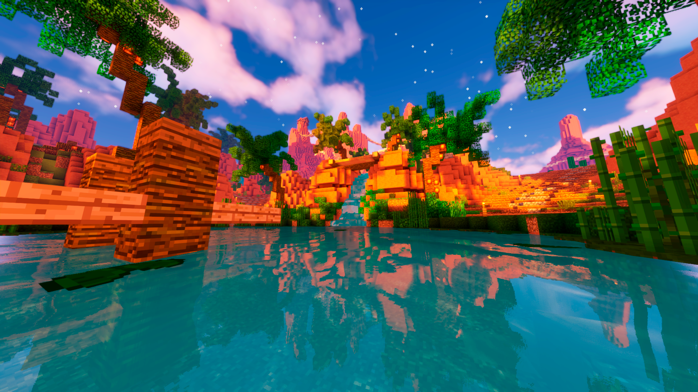
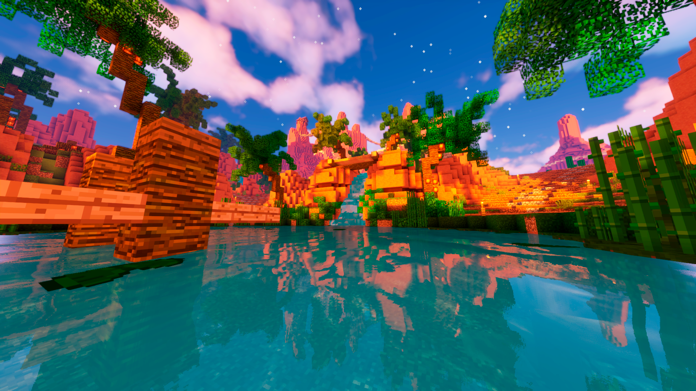
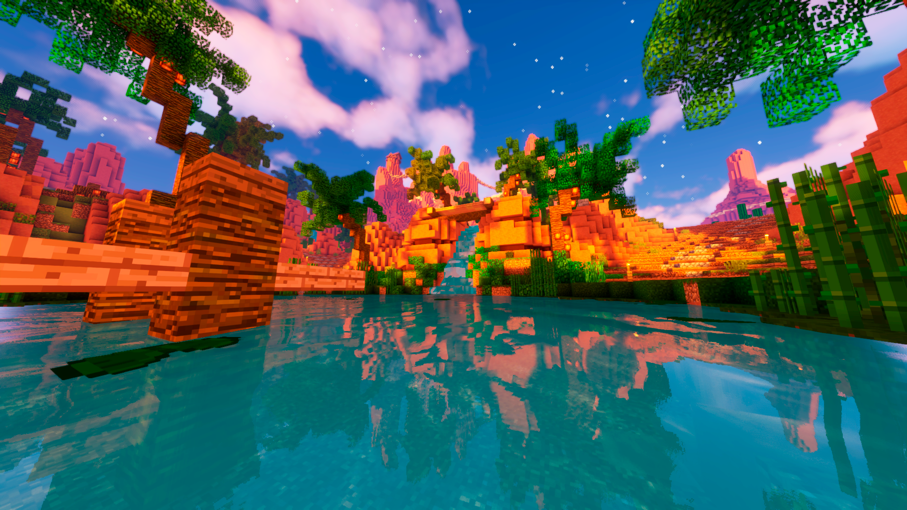
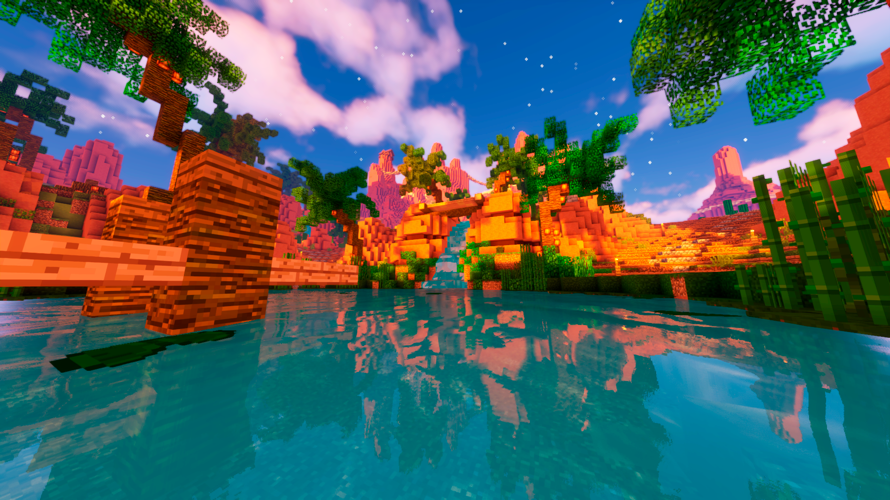

 

Polar is the ultimate automation solution, meticulously designed to simplify your Minecraft gameplay. Automate tedious tasks and boost your efficiency, allowing you to play the game the way you want to play it.